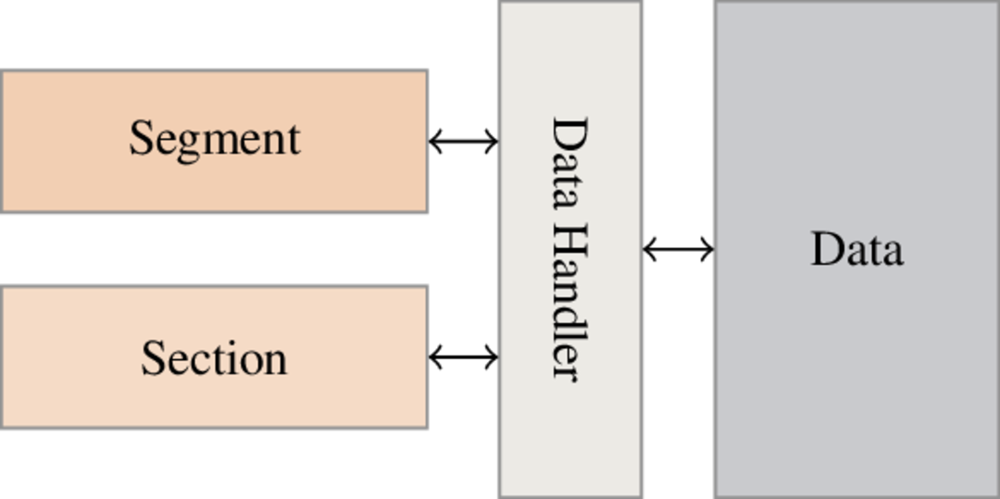

ELF Format¶
Duality sections/segments¶
In the ELF format we have two kinds of containers:
Sections
Segments
A first sight it’s a bit disturbing because it’s two representations of the same data. In fact these two representations are used differently.
Sections are usually used at link time by the linker (e.g. /bin/ld) whereas segments are usually used at load time by kernel and loader (e.g. /lib/ld-linux.so).
Sections header table is not mandatory so you can execute an ELF binary without sections header table. Let’s take an example:
$ readelf -Sh /bin/ls
ELF Header:
Magic: 7f 45 4c 46 02 01 01 00 00 00 00 00 00 00 00 00
Class: ELF64
Data: 2's complement, little endian
Version: 1 (current)
OS/ABI: UNIX - System V
ABI Version: 0
Type: EXEC (Executable file)
Machine: Advanced Micro Devices X86-64
Version: 0x1
Entry point address: 0x4022f0
Start of program headers: 64 (bytes into file)
Start of section headers: 37840 (bytes into file)
Flags: 0x0
Size of this header: 64 (bytes)
Size of program headers: 56 (bytes)
Number of program headers: 9
Size of section headers: 64 (bytes)
Number of section headers: 28
Section header string table index: 27
Section Headers:
[Nr] Name Type Address Offset
Size EntSize Flags Link Info Align
[ 0] NULL 0000000000000000 00000000
0000000000000000 0000000000000000 0 0 0
[ 1] .interp PROGBITS 0000000000400238 00000238
000000000000001c 0000000000000000 A 0 0 1
[ 2] .note.ABI-tag NOTE 0000000000400254 00000254
0000000000000020 0000000000000000 A 0 0 4
[ 3] .note.gnu.build-i NOTE 0000000000400274 00000274
0000000000000024 0000000000000000 A 0 0 4
[ 4] .gnu.hash GNU_HASH 0000000000400298 00000298
0000000000000060 0000000000000000 A 5 0 8
[ 5] .dynsym DYNSYM 00000000004002f8 000002f8
00000000000006d8 0000000000000018 A 6 1 8
[ 6] .dynstr STRTAB 00000000004009d0 000009d0
00000000000002f1 0000000000000000 A 0 0 1
[ 7] .gnu.version VERSYM 0000000000400cc2 00000cc2
0000000000000092 0000000000000002 A 5 0 2
...
[27] .shstrtab STRTAB 0000000000000000 000092d6
00000000000000f8 0000000000000000 0 0 1
Key to Flags:
W (write), A (alloc), X (execute), M (merge), S (strings), l (large)
I (info), L (link order), G (group), T (TLS), E (exclude), x (unknown)
O (extra OS processing required) o (OS specific), p (processor specific)
Now we remove sections header with LIEF:
from lief import ELF
binary = ELF.Parse("/bin/ls") # Build an ELF binary
header = binary.header
header.section_header_offset = 0;
header numberof_section_headers = 0;
binary.write("out.bin");
Now if we run out.bin:
$ ./out.bin
elf_reader.py elf_remove_section_table.py library_symbols_obfuscation out.bin
elf_rebuilder.py elf_symbol_obfuscation.py nm.py pe_reader.py
We can check that sections header table has been removed:
$ readelf -Sh ./out.bin
ELF Header:
Magic: 7f 45 4c 46 02 01 01 00 00 00 00 00 00 00 00 00
Class: ELF64
Data: 2's complement, little endian
Version: 1 (current)
OS/ABI: UNIX - System V
ABI Version: 0
Type: EXEC (Executable file)
Machine: Advanced Micro Devices X86-64
Version: 0x1
Entry point address: 0x4022f0
Start of program headers: 64 (bytes into file)
Start of section headers: 0 (bytes into file)
Flags: 0x0
Size of this header: 64 (bytes)
Size of program headers: 56 (bytes)
Number of program headers: 9
Size of section headers: 64 (bytes)
Number of section headers: 0
Section header string table index: 27 <corrupt: out of range>
There are no sections in this file.
As content can be used and updated by both sections and segments we can’t store it in sections/segments. Instead we use an interface to manage content. The manager interface looks like this:
{kind=link}

The manager is implemented in the ELF::DataHandler::Handler classe.